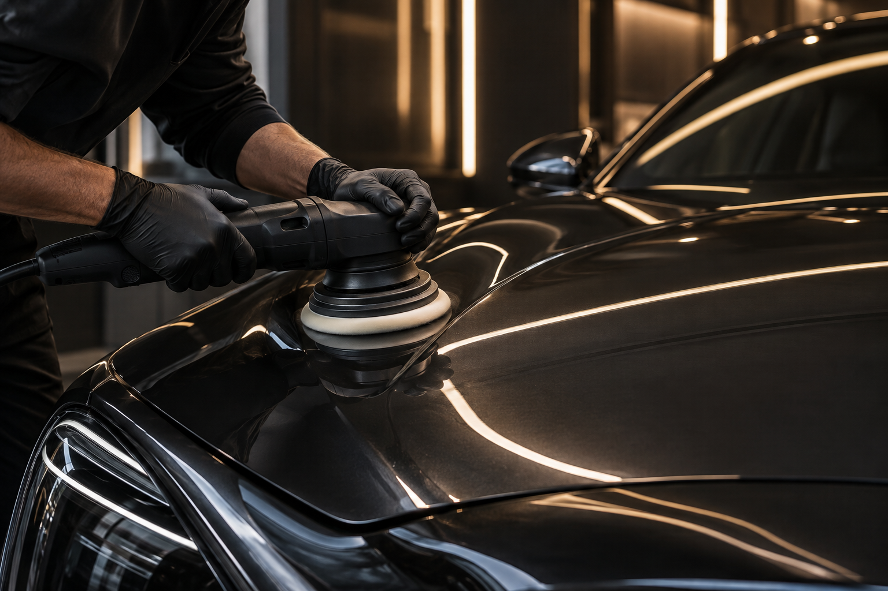

Külső mosás
Kíméletes kézi mosás, felni- és ablakpucolás, majd szárazra törlés.
GlossWerk autókozmetika
Külső és belső autóápolás, polírozás és tartós felületvédelem egy helyen.
Alapos munkaMinden autóra külön figyelmet fordítunk.
Minőségi anyagokBevált autóápolási termékekkel dolgozunk.
Egyszerű foglalásAz időpontigényt online is elküldheted.
Szolgáltatások
Válaszd ki az autód állapotához és az igényeidhez illő szolgáltatást.
Kíméletes kézi mosás, felni- és ablakpucolás, majd szárazra törlés.
Porszívózás, műanyagápolás és az utastér alapos felfrissítése.
A kisebb karcok javítása és a fényezés eredeti fényének visszaadása.
Tartós védelem a szennyeződések ellen, könnyebben tisztítható felülettel.

Rólunk
A GlossWerknél nem futószalagon dolgozunk. Először felmérjük az autó állapotát, majd megbeszéljük, milyen kezelésre van szükség. Célunk, hogy az autó tisztább, ápoltabb és könnyebben fenntartható legyen.
Kérj időpontotFoglalás menete
Jelöld meg az űrlapon, milyen munkát szeretnél kérni.
Írd be az elérhetőségedet, az autó típusát és a kívánt napot.
A beküldés után megjelenik a foglalás összesítője.
Vélemények
„Az autó teljesen újszerű lett. A fényezés sokkal szebb, mint előtte.”
„Precíz munka, a belső tér nagyon szép és tiszta lett.”
„A polírozás után eltűntek a kisebb karcok, látványos lett az eredmény.”
Töltsd ki a rövid űrlapot, és küldd el az igényedet.